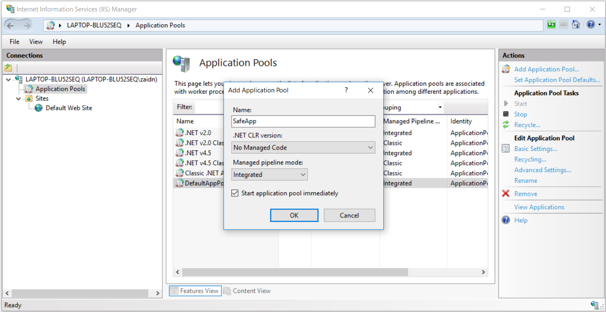
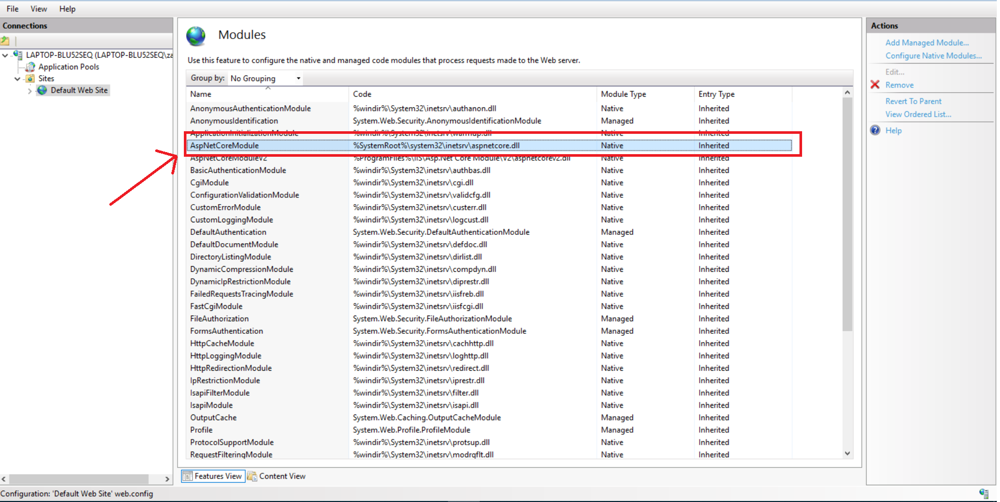
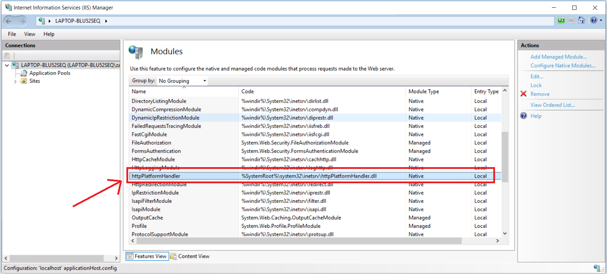
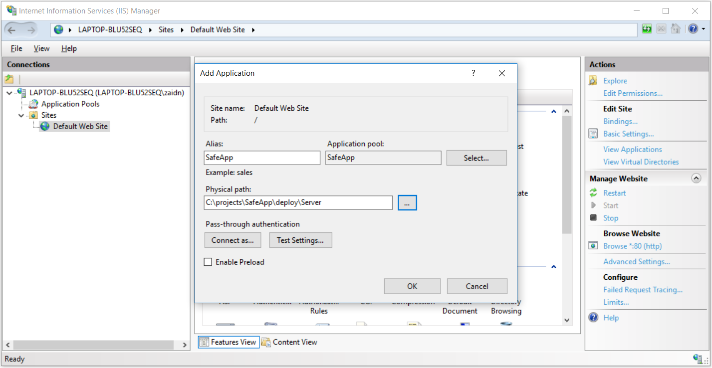
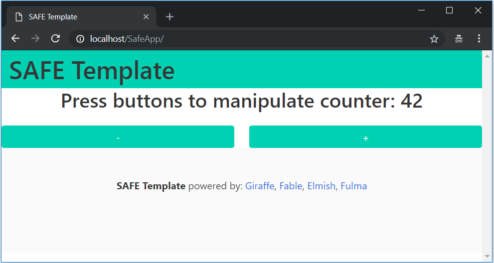
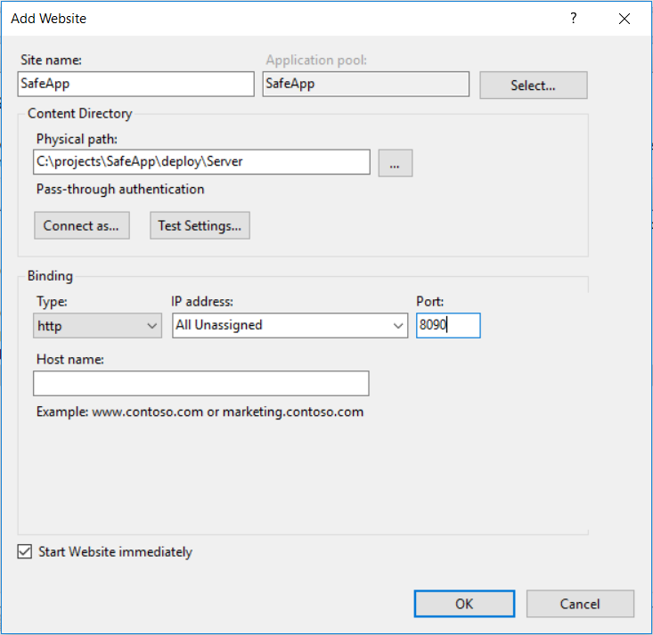
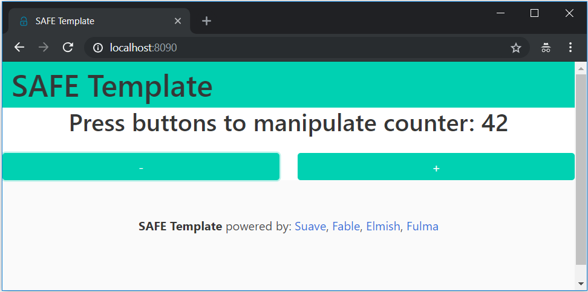

Deploy to IIS
The SAFE template can be easily deployed to IIS, either on-premise or on a hosted virtual machine running Windows. To get started, scaffold the template with the deploy option set to IIS:
dotnet new SAFE --deploy iis
The template will include a custom FAKE build target called Bundle to package your application and make it ready for deployment, run this target using:
fake build --target bundle
When the target finishes running succesfully, you will have a new deploy directory with this structure:
{template root}
|
| - deploy
| - Client
| - Server
Your app is now ready for deployment.
Setting up IIS
Create an Application Pool
Hosting dotnet core on IIS does not support Application Pool sharing which means every dotnet application has it's own application pool, create a new one, give it the name of the application, for example SafeApp and make sure to set the .NET CLR version to No Managed Code:

Required IIS Modules:
- ASP.NET Core module for Giraffe and Saturn
- HttpPlatformHandler for Suave
ASP.NET Core module
Like with any dotnet core app hosted within IIS, you will need to have the AspNetCoreModule installed in IIS*. This is a native module that starts your dotnet app in a child process of IIS and proxies all http requests coming from IIS to the application.

Note that for netcoreapp2.2, you will need AspNetCoreModule and not AspNetCoreModuleV2.
HttpPlatformHandler (applies to Suave)
Because Suave does not run on Kestrel, it does not use built-in IIS integration from ASP.NET Core, and therefore, Suave will use the generic HttpPlatformHandler module in IIS. Make sure you have the module installed on your IIS server:

There is a catch when using Suave and HttpPlatformHandler: you cannot create sub-applications within an IIS website (root level application) because the virtual paths will break how the routing works in Suave, meaning that you have to add a new website for a Suave application.
Another thing to considor when deploying Suave, is that you have to change a part your web.config manually, from this:
<httpPlatform
stdoutLogEnabled="true"
stdoutLogFile="suave.log"
startupTimeLimit="20"
processPath="dotnet"
arguments="./Server" />
to this:
<httpPlatform
stdoutLogEnabled="true"
stdoutLogFile="suave.log"
startupTimeLimit="20"
processPath="dotnet"
arguments="C:\full\path\to\deployed\Server.dll" />
because otherwise the HttpPlatformHandler will not be able to figure out where the application exactly is.
Add Application (applies to Giraffe and Saturn)
Now that the application pool is setup, we can our application to it. When Adding an application, you give it an ailias, and a physical path. In our case, because this is the only application in the application pool, lets just name it SafeApp and the physical path of the application is the Server directory of the bundled deployment directory:
{template root}
|
| - deploy
| - Client
| - Server <--- the physical path
Here I am adding the application to the default (root) website of IIS

Now your application should be up and running!

Add Website (applies to Suave)
Adding a website is the same as adding a sub-application, using a single application pool and having the physical path of the application be the Server directory of the bundled deployment directory:
{template root}
|
| - deploy
| - Client
| - Server <--- the physical path
but the difference is that now you have choose a different port for the application:

for this example, I have chosen to run the application on port 8090 and web.config looks like this:
<?xml version="1.0" encoding="utf-8"?>
<configuration>
<system.webServer>
<handlers>
<remove name="httpplatformhandler" />
<add name="httpplatformhandler" path="*" verb="*" modules="httpPlatformHandler" resourceType="Unspecified" />
</handlers>
<httpPlatform stdoutLogEnabled="true" stdoutLogFile="suave.log" startupTimeLimit="20" processPath="dotnet" arguments="C:\projects\SafeApp\deploy\Server\Server.dll" />
</system.webServer>
</configuration>
Notice how I am using the full path of the compiled Server.dll from my deployment directory.
Now click OK and your Suave app should be up and running:

Deploying a new version
- Stop the application pool
- Replace the contents of the deployment directory
- Restart/Recycle the application pool
Client developement considorations (applies to Giraffe and Saturn)
When hosting inside IIS, your application will most likely run inside a virtual path like in the above example. This means that requests made using fetch will not work by default:
// will not work
fetchAs<Customer list> "/api/customers"
To solve this, the template includes a module ServerPath with a function to normalize the routes, so instead of the above you would have:
// this works
fetchAs<Customer list> (ServerPath.normalize "/api/customers")
You will have to this for every request you make, unless you are using remoting which is done only once during proxy setup.
Be careful not to forget ServerPath.normalize, because if you forget it during developement, the route still works because there is no IIS but then when you deploy the app, the route won't work any more because of the virtual paths.